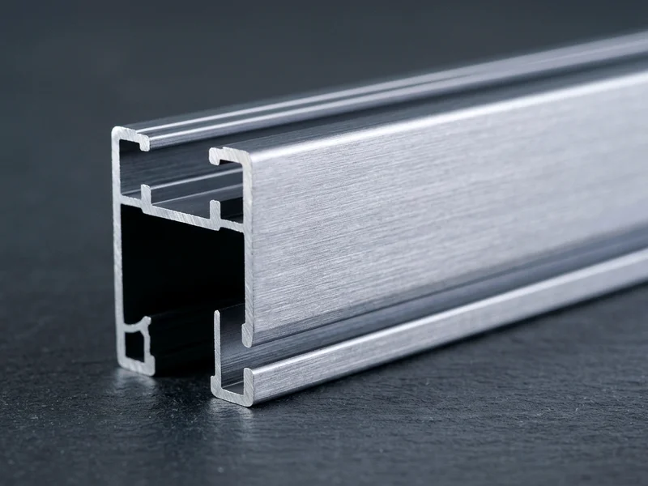
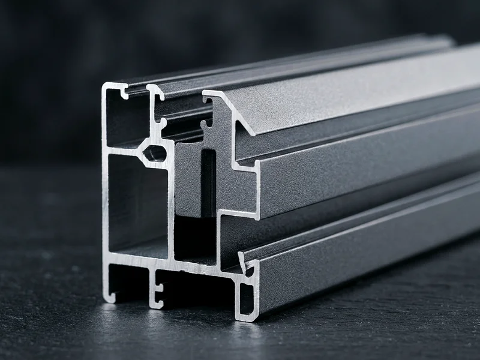

Finishes
Make it match the building.
Available in premium architectural finishes treated for UV stability, corrosion resistance, and tactile sophistication.

Anodised Aluminium
Silky satin metallic sheen with exceptional surface hardness and natural corrosion resistance.

Sublimated Wooden Finish
Warm natural teak and walnut woodgrain on architectural aluminium – zero termites, zero rot, zero maintenance.

Architectural Powder Coat
Any RAL shade in matt, satin, gloss, or micro-texture with high UV resistance against fading.